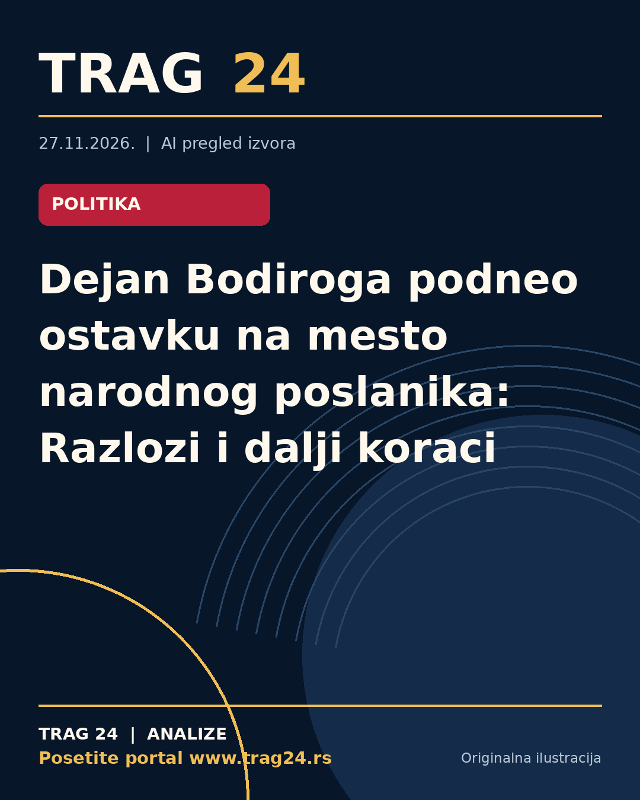

Dejan Bodiroga podneo ostavku na mesto narodnog poslanika: Razlozi i dalji koraci

ŠTA SE DOGODILO
Dejan Bodiroga, prvi na listi Studentskog pokreta „Studenti pobeđuju“, podneo je ostavku na mesto narodnog poslanika u Skupštini Srbije. Vest o njegovoj ostavci objavljena je ubrzo nakon konstitutivne sednice Skupštine, a Bodiroga je naveo da ostaje posvećen vrednostima Studentskog pokreta i da će podržati kandidata Studentske liste na predsedničkim izborima.
HRONOLOGIJA
Bodiroga je na parlamentarnim izborima bio kandidat Studentskog pokreta, koji je osvojio mandate. U saopštenju objavljenom nakon izbora, Bodiroga je istakao da zbog brojnih drugih obaveza ne može da prihvati poslanički mandat. Ostavka je zakazana za razmatranje na sjednici odbora 30. novembra. Prethodno je N1 pokušao da dobije objašnjenje od Bodiroge, koja je najavio da će detaljnije informacije biti poznate početkom naredne sedmice.
ŠTA NAVODE IZVORI
Iz saopštenja Studentskog pokreta koje prenosi portal Mašina saznajemo da Bodiroga smatra odgovornim da ne zauzima mesto u skupštinskom radu, jer smatra da drugi poslanici mogu dati veći doprinos. Izvor sa portala Espreso dodaje da je njegov odlazak neočekivan i da se spekulisalo o njegovim drugim funkcijama, ali zvaničnih potvrda za ovu tvrdnju nema. Takođe je poznato da je on trenutno direktor Evrolige, što može imati uticaj na odluku.
ŠTA JE POTVRĐENO
Potvrđeno je da je Dejan Bodiroga podneo ostavku na mesto narodnog poslanika ispred Studentskog pokreta. Takođe, saopšteno je da ostaje podrška vrednostima Studentskog pokreta i da će dati doprinos u kampanji za predsedničke izbore. Odbor za administrativno-budžetska i mandatno-imunitetska pitanja planira da razmatra njegovu ostavku 30. novembra. Njegova odluka je javno objavljena i potvrđena od strane samog Bodiroge.
ŠTA NIJE POTVRĐENO
Nije potvrđeno zbog kojih konkretnih obaveza je Bodiroga podneo ostavku, niti da li će preuzeti neku konkretnu novu funkciju u budućnosti. Takođe, nisu potvrđene spekulacije o njegovoj budućoj karijeri ili novim političkim angažmanima. Nema jasan odgovor niti detaljnije objašnjenje zašto nije mogao da nastavi s poslaničkim aktivnostima.
ŠTA OSTАJE OTVORENO: Ostaje nepoznato da li će Bodiroga preuzeti neku drugu funkciju ili zadatak unutar Studentskog pokreta ili političkog sistema, kao ni dalje informacije o njegovoj ulozi u kampanji za predsedničke izbore. Takođe je otvoreno pitanje ko će zauzeti njegovo mesto u Skupštini i koji će biti dugoročni učinci na Studentski pokret nakon njegove ostavke. Više detalja očekuje se nakon razmatranja ostavke u odboru krajem novembra.
Izvori
- https://www.masina.rs/bodiroga-podneo-ostavku-na-mesto-poslanika-zbog-obaveza-ostajem-uz-vrednosti-studentskog-pokreta/
- https://www.espreso.co.rs/vesti/politika/1632178/bodiroga-se-oglasio-nakon-vesti-o-ostavci
Ova analiza je pripremljena uz pomoć veštačke inteligencije na osnovu javno dostupnih izvora. Navodi izvora nisu nužno nezavisno potvrđeni.